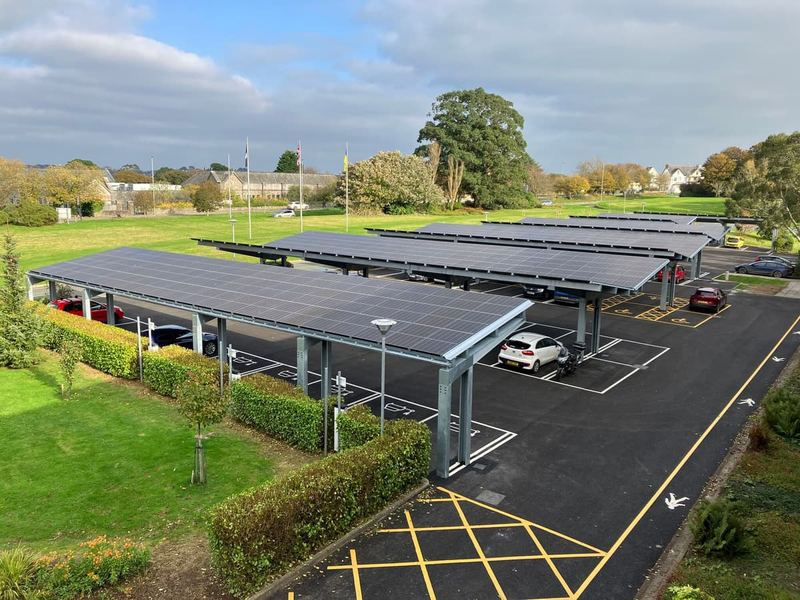

The grid connection is the most common cause of delay for commercial solar: almost every system needs approval from the local network operator (DNO) under G99, which can take months where the network is busy. Most rooftop systems in England do not need planning permission, but ground-mounted arrays, carports, listed buildings and some protected areas need more care.
Grid connection and your DNO
Your Distribution Network Operator (DNO) runs the local electricity network. Before you connect solar, the DNO must approve it, under one of two technical standards:
| Standard | Applies to | What it means |
|---|---|---|
| G98 | Up to 16A per phase (about 3.68 kW on a single phase) | Install, then notify the DNO. Domestic scale only. |
| G99, simplified | Up to 50 kW three-phase (17 kW single-phase) | Apply before installing. A shorter form for small commercial systems. |
| G99, standard | Above 50 kW three-phase | Full application, network study and a formal connection offer. Covers almost all commercial projects. |
Larger systems are grouped by size: Type A covers over 50 kW to under 1 MW, and Type B covers 1 MW to under 10 MW, with more testing and paperwork as size increases.
How long it takes
For a typical rooftop system, allow around 12 weeks from application to connection offer, in our experience. Where the local network is constrained, the DNO may need to study the wider network or require reinforcement, which adds time and cost. Larger embedded projects can also need checks on the impact on the transmission network, which can add several months.
In 2025 the GB connection queue moved to a "first ready and needed, first connected" approach, which mainly affects larger projects but means a well-prepared application matters more than ever.
Export limits
If the network cannot take everything your system could export, the DNO may offer a connection with an export limit, managed by a control system that caps what flows back to the grid. This can make a connection quicker and cheaper. Because the calculator values exported electricity at only 5p per kWh, an export limit usually costs little if your site uses most of its own solar.
Planning permission

In England, most solar on commercial buildings is permitted development, so it does not need a full planning application. Since December 2023:
- Rooftop solar on non-domestic buildings is permitted development with no upper limit on capacity (the old 1 MW cap was removed).
- Solar canopies over non-domestic car parks have their own permitted development right, up to 4 metres high and at least 10 metres from homes, but you must apply for prior approval before work starts.
- Stand-alone, ground-mounted equipment has more limits, especially in protected areas, and larger ground-mounted arrays usually need full planning permission.
The main exceptions are listed buildings, which still need consent, and sites where the council has removed permitted development rights with an Article 4 direction. Conservation areas, National Parks and National Landscapes have extra conditions. Rules are different in Scotland, Wales and Northern Ireland.
Always check with your local planning authority early. A short pre-application conversation is cheap compared with a delayed project.
Roof condition and structure
Panels add weight and wind load, and they will sit on the roof for 25 years or more. Before you commit:
- Get a structural survey. Many lightweight industrial roofs need checking, and ballasted flat-roof systems add more weight than fixed ones.
- Check the roof's remaining life. If the roof will need replacing within the next ten years, replace or overclad it first. Removing and refitting panels later is expensive.
- Look for asbestos and fragile materials. Many older industrial roofs are asbestos cement or have fragile rooflights, which affects the installation method and cost.
Leases, landlords and ownership
If you rent your building, you will need the landlord's consent, and your lease should run for longer than the payback period, or longer than the contract if you use a PPA. Landlords are increasingly open to solar because it improves a building's energy rating and appeal to tenants. Agree early who owns the system, who benefits from the electricity, and what happens when the lease ends.
Insurance and fire safety
Tell your buildings insurer before installation. Many insurers now expect rooftop systems to follow recognised fire safety guidance for solar on commercial roofs, such as RISCAuthority RC62, with isolation switches, proper cable routing and regular inspection. A reputable, accredited installer will design to this from the start.
Other things to check
- Shading from nearby buildings, trees or rooftop plant, which the calculator does not model.
- Glint and glare if you are near an airport, railway or busy road.
- Your electrical system, including space for inverters and switchgear, and the capacity of your existing supply.
- Access for scaffolding, cranes and deliveries during installation.
A typical timeline
From first enquiry to a working system, a straightforward rooftop project usually takes around five to seven months:
| Stage | Typical duration |
|---|---|
| Feasibility and initial estimate | About 4 weeks |
| Site survey and design | About 8 weeks |
| DNO application (alongside design) | About 12 weeks |
| Contract and legal | About 4 weeks |
| Installation | About 4 weeks |
| Commissioning and go-live | About 4 weeks |
Allow longer for ground-mounted arrays and carports that need planning, for PPAs (more contract work), and for very large systems where the DNO needs wider network studies.
Common questions
Do I need planning permission for solar panels on a commercial roof?
In England, usually not. Rooftop solar on non-domestic buildings is permitted development with no capacity limit since December 2023. Listed buildings, sites with an Article 4 direction and some protected areas are exceptions. Check with your local planning authority.
Do solar carports need planning permission?
In England, canopies over non-domestic car parks can be permitted development if they are no more than 4 metres high and at least 10 metres from homes, but you must apply for prior approval first.
What is a G99 application?
G99 is the technical standard for connecting generation of more than 16A per phase to the distribution network. Almost every commercial solar system needs a G99 application and approval from the DNO before it is connected.
How long does DNO approval take?
For a typical rooftop system, allow around 12 weeks for a connection offer. It can take longer where the local network is constrained or reinforcement is needed.
What if the DNO will not let me export?
You can often accept an export limit, with a control system that stops the system sending more than an agreed amount to the grid. If your site uses most of its own solar, the lost export income is usually small.